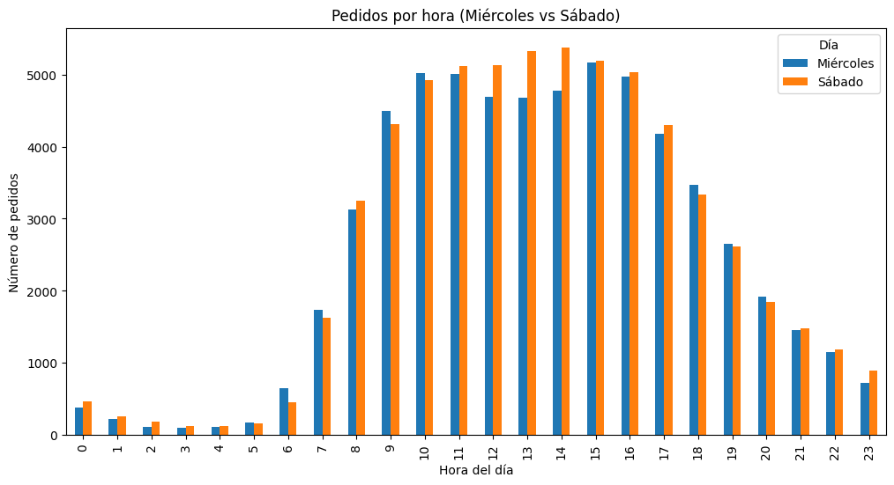
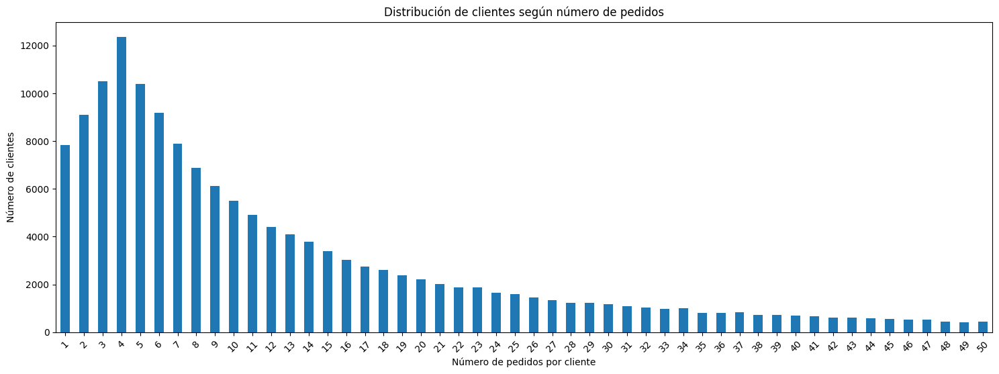
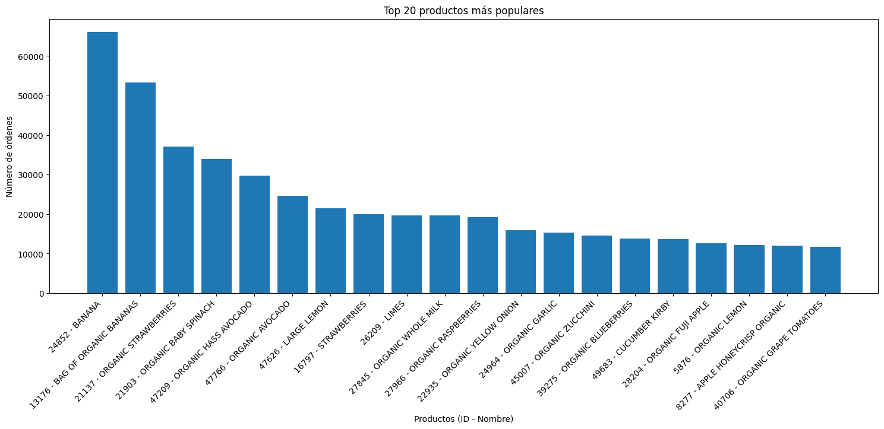
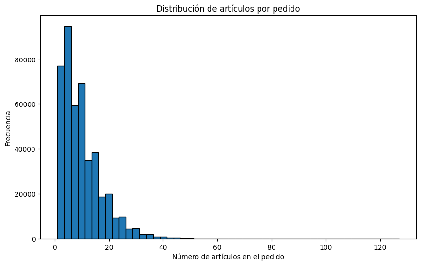
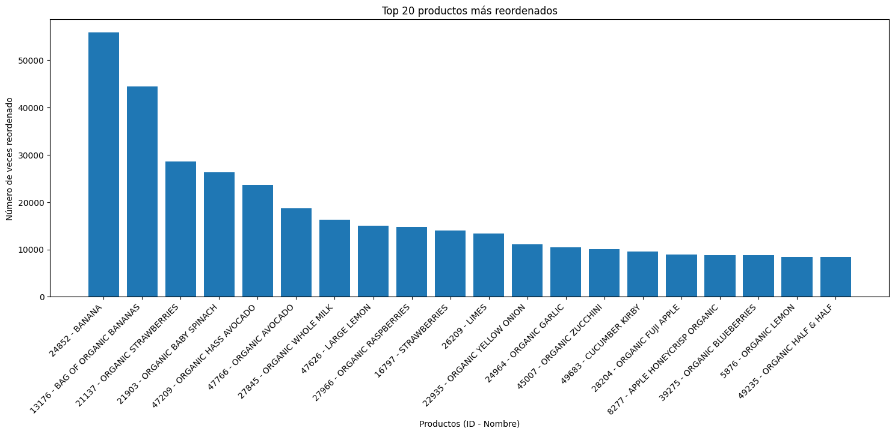
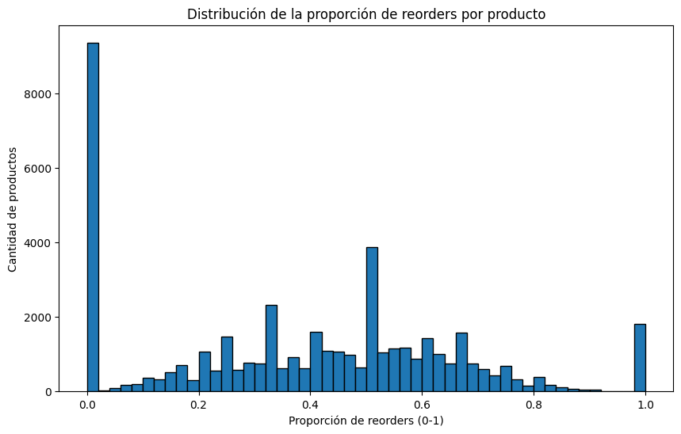
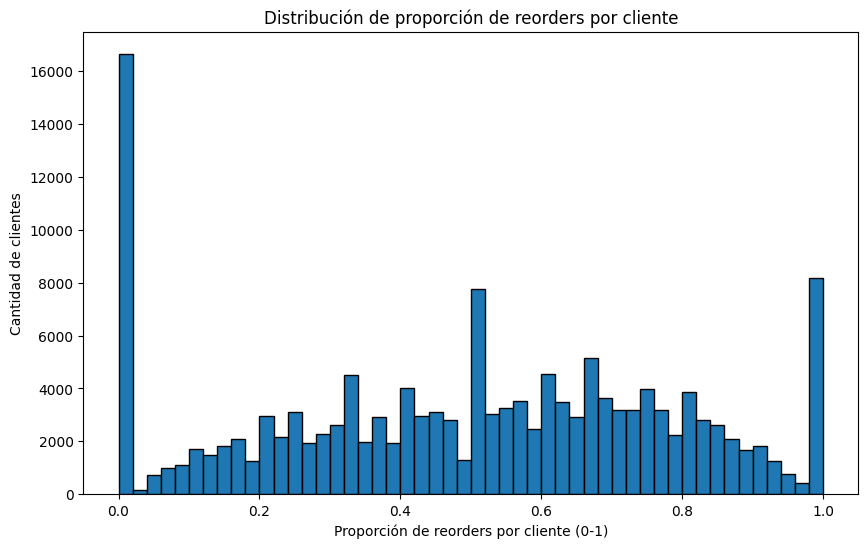
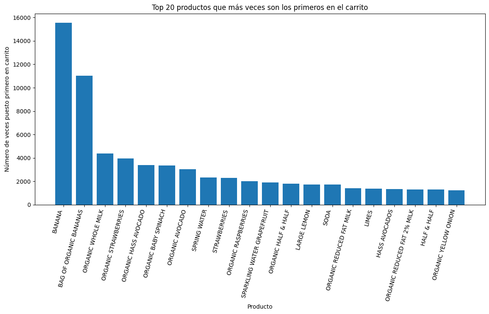

# importar librerías
import pandas as pdAnalisis de Plataforma de Entrega de Comestibles
Introducción
Instacart es una plataforma de entregas de comestibles donde la clientela puede registrar un pedido y hacer que se lo entreguen, similar a Uber Eats y Door Dash.
Diccionario de datos
Hay cinco tablas en el conjunto de datos. A continuación se muestra un diccionario de datos que enumera las columnas de cada tabla y describe los datos que contienen.
instacart_orders.csv: cada fila corresponde a un pedido en la aplicación Instacart.'order_id': número de ID que identifica de manera única cada pedido.'user_id': número de ID que identifica de manera única la cuenta de cada cliente.'order_number': el número de veces que este cliente ha hecho un pedido.'order_dow': día de la semana en que se hizo el pedido (0 si es domingo).'order_hour_of_day': hora del día en que se hizo el pedido.'days_since_prior_order': número de días transcurridos desde que este cliente hizo su pedido anterior.
products.csv: cada fila corresponde a un producto único que pueden comprar los clientes.'product_id': número ID que identifica de manera única cada producto.'product_name': nombre del producto.'aisle_id': número ID que identifica de manera única cada categoría de pasillo de víveres.'department_id': número ID que identifica de manera única cada departamento de víveres.
order_products.csv: cada fila corresponde a un artículo pedido en un pedido.'order_id': número de ID que identifica de manera única cada pedido.'product_id': número ID que identifica de manera única cada producto.'add_to_cart_order': el orden secuencial en el que se añadió cada artículo en el carrito.'reordered': 0 si el cliente nunca ha pedido este producto antes, 1 si lo ha pedido.
aisles.csv'aisle_id': número ID que identifica de manera única cada categoría de pasillo de víveres.'aisle': nombre del pasillo.
departments.csv'department_id': número ID que identifica de manera única cada departamento de víveres.'department': nombre del departamento.
Paso 1. Descripción de los datos
# leer conjuntos de datos en los DataFrames
instacard_df = pd.read_csv('/content/instacart_orders.csv', sep=';')
products_df = pd.read_csv('/content/products.csv', sep=';')
order_products_df = pd.read_csv('/content/order_products.csv', sep=';')
aisles_df = pd.read_csv('/content/aisles.csv', sep=';')
department_df = pd.read_csv('/content/departments.csv', sep=';')# mostrar información del DataFrame
instacard_df.info()<class 'pandas.core.frame.DataFrame'>
RangeIndex: 478967 entries, 0 to 478966
Data columns (total 6 columns):
# Column Non-Null Count Dtype
--- ------ -------------- -----
0 order_id 478967 non-null int64
1 user_id 478967 non-null int64
2 order_number 478967 non-null int64
3 order_dow 478967 non-null int64
4 order_hour_of_day 478967 non-null int64
5 days_since_prior_order 450148 non-null float64
dtypes: float64(1), int64(5)
memory usage: 21.9 MB# mostrar información del DataFrame
products_df.info()<class 'pandas.core.frame.DataFrame'>
RangeIndex: 49694 entries, 0 to 49693
Data columns (total 4 columns):
# Column Non-Null Count Dtype
--- ------ -------------- -----
0 product_id 49694 non-null int64
1 product_name 48436 non-null object
2 aisle_id 49694 non-null int64
3 department_id 49694 non-null int64
dtypes: int64(3), object(1)
memory usage: 1.5+ MB# mostrar información del DataFrame
order_products_df.info(show_counts=True)<class 'pandas.core.frame.DataFrame'>
RangeIndex: 4545007 entries, 0 to 4545006
Data columns (total 4 columns):
# Column Non-Null Count Dtype
--- ------ -------------- -----
0 order_id 4545007 non-null int64
1 product_id 4545007 non-null int64
2 add_to_cart_order 4544171 non-null float64
3 reordered 4545007 non-null int64
dtypes: float64(1), int64(3)
memory usage: 138.7 MB# mostrar información del DataFrame
aisles_df.info()<class 'pandas.core.frame.DataFrame'>
RangeIndex: 134 entries, 0 to 133
Data columns (total 2 columns):
# Column Non-Null Count Dtype
--- ------ -------------- -----
0 aisle_id 134 non-null int64
1 aisle 134 non-null object
dtypes: int64(1), object(1)
memory usage: 2.2+ KB# mostrar información del DataFrame
department_df.info()<class 'pandas.core.frame.DataFrame'>
RangeIndex: 21 entries, 0 to 20
Data columns (total 2 columns):
# Column Non-Null Count Dtype
--- ------ -------------- -----
0 department_id 21 non-null int64
1 department 21 non-null object
dtypes: int64(1), object(1)
memory usage: 468.0+ bytesConclusiones
Inicialmente se puede observar tras una primera ejecución del método info que los datos csv no están separados por comas como lo es el standar, sino que están separados por ‘punto y coma’. Por lo tanto para poder obtener una muestra más precisa de los datos de la hoja de cálculo, es necesario indicar el tipo de separador correcto con la propiedad ‘sep’ y así poder ver la cantidad de columas y filas que contiene cada documento.
Paso 2. Preprocesamiento de los datos
Plan de solución
El plan es identificar los tipos de datos de cada df y realizar als conversiones necesarias. Así mismo, veririficar valores duplicados y valores ausentes para su reemplazo o eliminación.
orders data frame
# Revisa si hay pedidos duplicados
instacard_df.value_counts()
#instacard_df[instacard_df.duplicated()]| count | ||||||
|---|---|---|---|---|---|---|
| order_id | user_id | order_number | order_dow | order_hour_of_day | days_since_prior_order | |
| 2845099 | 31189 | 11 | 3 | 2 | 7.0 | 2 |
| 408114 | 68324 | 4 | 3 | 2 | 18.0 | 2 |
| 1112182 | 202304 | 84 | 3 | 2 | 6.0 | 2 |
| 391768 | 57671 | 19 | 3 | 2 | 10.0 | 2 |
| 2282673 | 86751 | 49 | 3 | 2 | 2.0 | 2 |
| ... | ... | ... | ... | ... | ... | ... |
| 1141847 | 156072 | 4 | 2 | 21 | 6.0 | 1 |
| 1141845 | 153218 | 2 | 3 | 8 | 6.0 | 1 |
| 1141835 | 120105 | 16 | 4 | 10 | 15.0 | 1 |
| 1141834 | 92229 | 8 | 5 | 14 | 26.0 | 1 |
| 1141928 | 77235 | 27 | 2 | 12 | 10.0 | 1 |
450135 rows × 1 columns
# Elimina los pedidos duplicados
instacard_df.drop_duplicates(inplace=True)# Vuelve a verificar si hay filas duplicadas
instacard_df[instacard_df.duplicated()].count()| 0 | |
|---|---|
| order_id | 0 |
| user_id | 0 |
| order_number | 0 |
| order_dow | 0 |
| order_hour_of_day | 0 |
| days_since_prior_order | 0 |
# Vuelve a verificar únicamente si hay IDs duplicados de pedidos
instacard_df['order_id'].duplicated().sum()np.int64(0)Después de haber borrado las filas duplicadas, ahora podemos ver que tanto verificando el df completo así como filtrándolo por el id.
products data frame
# Verifica si hay filas totalmente duplicadas
products_df.value_counts()| count | ||||
|---|---|---|---|---|
| product_id | product_name | aisle_id | department_id | |
| 49694 | BURRITO- STEAK & CHEESE | 38 | 1 | 1 |
| 1 | Chocolate Sandwich Cookies | 61 | 19 | 1 |
| 2 | All-Seasons Salt | 104 | 13 | 1 |
| 3 | Robust Golden Unsweetened Oolong Tea | 94 | 7 | 1 |
| 49678 | Large Chicken & Cheese Taquitos | 129 | 1 | 1 |
| ... | ... | ... | ... | ... |
| 9 | Light Strawberry Blueberry Yogurt | 120 | 16 | 1 |
| 8 | Cut Russet Potatoes Steam N' Mash | 116 | 1 | 1 |
| 7 | Pure Coconut Water With Orange | 98 | 7 | 1 |
| 6 | Dry Nose Oil | 11 | 11 | 1 |
| 5 | Green Chile Anytime Sauce | 5 | 13 | 1 |
48436 rows × 1 columns
# Revisa únicamente si hay ID de productos duplicados
products_df['product_id'].duplicated().sum()np.int64(0)# Revisa únicamente si hay nombres duplicados de productos (convierte los nombres a letras mayúsculas para compararlos mejor)
products_df['product_name'] = products_df['product_name'].str.upper().str.strip()
products_df['product_name'].duplicated().sum()np.int64(1361)# Revisa si hay nombres duplicados de productos no faltantes
print(products_df[products_df['product_name'].duplicated(keep=False)==True & products_df['product_name'].notna()].sort_values(by="product_name"))
#products_df['product_name'].value_counts() product_id product_name aisle_id \
23339 23340 18-IN-1 HEMP PEPPERMINT PURE-CASTILE SOAP 25
31844 31845 18-IN-1 HEMP PEPPERMINT PURE-CASTILE SOAP 25
19941 19942 AGED BALSAMIC VINEGAR OF MODENA 19
13152 13153 AGED BALSAMIC VINEGAR OF MODENA 19
24830 24831 ALBACORE SOLID WHITE TUNA IN WATER 95
... ... ... ...
46873 46874 VITAMIN D3 5000 IU 47
21366 21367 WILD SARDINES IN SPRING WATER 95
40093 40094 WILD SARDINES IN SPRING WATER 95
1826 1827 YAMS CUT SWEET POTATOES IN SYRUP 81
38260 38261 YAMS CUT SWEET POTATOES IN SYRUP 81
department_id
23339 11
31844 11
19941 13
13152 13
24830 15
... ...
46873 11
21366 15
40093 15
1826 15
38260 15
[207 rows x 4 columns]Después de tomar la columna ‘product_name’ y pasar todo a mayúscula y quitar espacios en blanco, noté que efectivamente hay duplicados. Sin embargo, es probable que en las demás tablas estos productos duplicados con id distinto estén siendo utilizados por lo que he decidido dejarlos como tal. Una posible solución sería realizar un reemplazo de los id por un único pero correría el riesgo de perder datos.
departments data frame
# Revisa si hay filas totalmente duplicadas
department_df.duplicated().sum()np.int64(0)# Revisa únicamente si hay IDs duplicadas de departamentos
department_df['department_id'].duplicated().sum()np.int64(0)Por lo visto, no hay filas duplicadas en este df.
aisles data frame
# Revisa si hay filas totalmente duplicadas
aisles_df.duplicated().sum()np.int64(0)# Revisa únicamente si hay IDs duplicadas de pasillos
aisles_df['aisle_id'].duplicated().sum()np.int64(0)Por lo visto, no hay filas duplicadas en este df.
order_products data frame
# Revisa si hay filas totalmente duplicadas
order_products_df.duplicated().sum()np.int64(0)# Vuelve a verificar si hay cualquier otro duplicado engañoso
order_products_df.value_counts()| count | ||||
|---|---|---|---|---|
| order_id | product_id | add_to_cart_order | reordered | |
| 3421079 | 30136 | 1.0 | 0 | 1 |
| 4 | 10054 | 5.0 | 1 | 1 |
| 17616 | 10.0 | 1 | 1 | |
| 21351 | 6.0 | 1 | 1 | |
| 22598 | 7.0 | 1 | 1 | |
| ... | ... | ... | ... | ... |
| 9 | 3990 | 14.0 | 1 | 1 |
| 2014 | 4.0 | 1 | 1 | |
| 432 | 13.0 | 1 | 1 | |
| 4 | 46842 | 1.0 | 0 | 1 |
| 41276 | 13.0 | 1 | 1 |
4544171 rows × 1 columns
Hay duplicados en los id’s pero es normal debido a que una orden contiene varios productos.
Hallar y Eliminar los valores ausentes
Al trabajar con valores duplicados, pudimos observar que también nos falta investigar valores ausentes:
- La columna
'product_name'de la tabla products. - La columna
'days_since_prior_order'de la tabla orders. - La columna
'add_to_cart_order'de la tabla order_productos.
products data frame
# Encuentra los valores ausentes en la columna 'product_name'
products_df['product_name'].isna().sum()np.int64(1258)‘product_name’ tiene 1258 valores ausentes.
# ¿Todos los nombres de productos ausentes están relacionados con el pasillo con ID 100?
#products_df['product_name'].isna().sum()
print(products_df[products_df['product_name']
.isna()]
.groupby('aisle_id').size()
.reset_index(name='count')) aisle_id count
0 100 1258# ¿Todos los nombres de productos ausentes están relacionados con el departamento con ID 21?
print(products_df[products_df['product_name'].isna()
& (products_df['aisle_id']==100)
& (products_df['department_id']==21)]) product_id product_name aisle_id department_id
37 38 NaN 100 21
71 72 NaN 100 21
109 110 NaN 100 21
296 297 NaN 100 21
416 417 NaN 100 21
... ... ... ... ...
49552 49553 NaN 100 21
49574 49575 NaN 100 21
49640 49641 NaN 100 21
49663 49664 NaN 100 21
49668 49669 NaN 100 21
[1258 rows x 4 columns]# Usa las tablas department y aisle para revisar los datos del pasillo con ID 100 y el departamento con ID 21.
print(aisles_df[aisles_df['aisle_id'] == 100])
print()
print(department_df[department_df['department_id'] == 21]) aisle_id aisle
99 100 missing
department_id department
20 21 missingEn base a los df department y aisle, se puede observar que los id’s mencionados están con valores de missing.
# Completa los nombres de productos ausentes con 'Unknown'
products_df['product_name'].fillna('Unknown', inplace=True)
print(products_df[products_df['product_name'].isna()])Empty DataFrame
Columns: [product_id, product_name, aisle_id, department_id]
Index: []/tmp/ipykernel_7042/62194942.py:2: FutureWarning: A value is trying to be set on a copy of a DataFrame or Series through chained assignment using an inplace method.
The behavior will change in pandas 3.0. This inplace method will never work because the intermediate object on which we are setting values always behaves as a copy.
For example, when doing 'df[col].method(value, inplace=True)', try using 'df.method({col: value}, inplace=True)' or df[col] = df[col].method(value) instead, to perform the operation inplace on the original object.
products_df['product_name'].fillna('Unknown', inplace=True)Después de llenar los nombres vaciós, vemos como ahora ya todos los datos de la columna ‘product_name’ tienen valores
orders data frame
# Encuentra los valores ausentes
print(instacard_df[instacard_df['days_since_prior_order'].isna()]) order_id user_id order_number order_dow order_hour_of_day \
28 133707 182261 1 3 10
96 787445 25685 1 6 18
100 294410 111449 1 0 19
103 2869915 123958 1 4 16
104 2521921 42286 1 3 18
... ... ... ... ... ...
478895 2589657 205028 1 0 16
478896 2222353 141211 1 2 13
478922 2272807 204154 1 1 15
478926 2499542 68810 1 4 19
478945 1387033 22496 1 5 14
days_since_prior_order
28 NaN
96 NaN
100 NaN
103 NaN
104 NaN
... ...
478895 NaN
478896 NaN
478922 NaN
478926 NaN
478945 NaN
[28817 rows x 6 columns]# ¿Hay algún valor ausente que no sea el primer pedido del cliente?
print(instacard_df[instacard_df['days_since_prior_order'].isna() & (instacard_df['order_number'] > 1)])Empty DataFrame
Columns: [order_id, user_id, order_number, order_dow, order_hour_of_day, days_since_prior_order]
Index: []Los valores ausentes que encontramos en este df se encuentran en la columna ‘days_since_prior_order’ y sólo están cuando son la primera compra por lo que eso es correcto.
order_products data frame
# Encuentra los valores ausentes
print(order_products_df[order_products_df['add_to_cart_order'].isna()]) order_id product_id add_to_cart_order reordered
737 2449164 5068 NaN 0
9926 1968313 43867 NaN 0
14394 2926893 11688 NaN 0
16418 1717990 4142 NaN 0
30114 1959075 42828 NaN 1
... ... ... ... ...
4505662 1800005 7411 NaN 0
4511400 1633337 260 NaN 0
4517562 404157 9517 NaN 0
4534112 1673227 17835 NaN 0
4535739 1832957 17949 NaN 1
[836 rows x 4 columns]# ¿Cuáles son los valores mínimos y máximos en esta columna?
print('Min value:',order_products_df['add_to_cart_order'].min())
print('Max value:',order_products_df['add_to_cart_order'].max())Min value: 1.0
Max value: 64.0el valor máximo encontrado es 64, pero se ven, tal como se mostraba en el ‘info’ que esa columna tiene el tipo float cuando debe ser int
# Guarda todas las IDs de pedidos que tengan un valor ausente en 'add_to_cart_order'
order_product_ids = order_products_df[order_products_df['add_to_cart_order'].isna()][['order_id', 'product_id']]
print(order_product_ids) order_id product_id
737 2449164 5068
9926 1968313 43867
14394 2926893 11688
16418 1717990 4142
30114 1959075 42828
... ... ...
4505662 1800005 7411
4511400 1633337 260
4517562 404157 9517
4534112 1673227 17835
4535739 1832957 17949
[836 rows x 2 columns]# ¿Todos los pedidos con valores ausentes tienen más de 64 productos?
# Agrupa todos los pedidos con datos ausentes por su ID de pedido.
counts = order_product_ids.groupby('order_id')['product_id'].count()
# Cuenta el número de 'product_id' en cada pedido y revisa el valor mínimo del conteo.
counts = counts.sort_values()
print(counts)order_id
9310 1
747668 1
888470 1
2621907 1
2170451 1
..
1959075 34
171934 40
2136777 44
3308010 51
61355 63
Name: product_id, Length: 70, dtype: int64La cuenta de los productos por cada pedido que tiene la columna add_to_card vacía oscila entre 1 a 63.Por lo que a la pregunta inicial, la respuesta es no.
# Remplaza los valores ausentes en la columna 'add_to_cart? con 999 y convierte la columna al tipo entero.
order_products_df['add_to_cart_order'].fillna(999, inplace=True)
order_products_df['add_to_cart_order'] = order_products_df['add_to_cart_order'].astype(int)
order_products_df.info()<class 'pandas.core.frame.DataFrame'>
RangeIndex: 4545007 entries, 0 to 4545006
Data columns (total 4 columns):
# Column Dtype
--- ------ -----
0 order_id int64
1 product_id int64
2 add_to_cart_order int64
3 reordered int64
dtypes: int64(4)
memory usage: 138.7 MB/tmp/ipykernel_7042/3391076673.py:3: FutureWarning: A value is trying to be set on a copy of a DataFrame or Series through chained assignment using an inplace method.
The behavior will change in pandas 3.0. This inplace method will never work because the intermediate object on which we are setting values always behaves as a copy.
For example, when doing 'df[col].method(value, inplace=True)', try using 'df.method({col: value}, inplace=True)' or df[col] = df[col].method(value) instead, to perform the operation inplace on the original object.
order_products_df['add_to_cart_order'].fillna(999, inplace=True)Luego de haber llenado los valores vacíos con el número 999 ya pudimos cambiar el tipo de dato a int. Con ya se podrían hacer cálculos más adelante o incluisve trabajar con gráficos.
Conclusiones
El caso tiene varias tablas y a la vez varios de los errores vistos en las clases. Iniciamos con valores duplicados y luego con valores nulos. Interesante igual lo de agrupar debido a que una orden tiene varios productos y en base a eso poder luego reemplazar los valores perdidos por ‘unknown’. Finalmente también la ultima parte que contenía valores nulos en la columna de la orden del carrito, en los cuales se reemplazó por 999 para así poder mantener los valores y a la vez facilitar más adelante otros análisis con el cambio del tipo de dato.
Paso 3. Análisis de los datos
- Verifica que los valores en las columnas
'order_hour_of_day'y'order_dow'en la tabla orders sean razonables (es decir,'order_hour_of_day'oscile entre 0 y 23 y'order_dow'oscile entre 0 y 6). - Crea un gráfico que muestre el número de personas que hacen pedidos dependiendo de la hora del día.
- Crea un gráfico que muestre qué día de la semana la gente hace sus compras.
- Crea un gráfico que muestre el tiempo que la gente espera hasta hacer su siguiente pedido, y comenta sobre los valores mínimos y máximos.
[A1] Verifica que los valores sean sensibles
print('order_hour_of_day value min:',instacard_df['order_hour_of_day'].min())
print('order_hour_of_day value min:',instacard_df['order_hour_of_day'].max())order_hour_of_day value min: 0
order_hour_of_day value min: 23print('order_dow value min:',instacard_df['order_dow'].min())
print('order_dow value min:',instacard_df['order_dow'].max())order_dow value min: 0
order_dow value min: 6De acuerdo a lo especificado, los rangos son correctos.
[A2] Para cada hora del día, ¿cuántas personas hacen órdenes?
print(instacard_df.groupby('order_hour_of_day')['user_id'].count())order_hour_of_day
0 3180
1 1763
2 989
3 770
4 765
5 1371
6 4215
7 13043
8 25024
9 35896
10 40578
11 40032
12 38034
13 39007
14 39631
15 39789
16 38112
17 31930
18 25510
19 19547
20 14624
21 11019
22 8512
23 5611
Name: user_id, dtype: int64Por lo que se ve, a partir de la noche, específicamente desde las 22 hay una caída notable. Luego a partir de las 7 am vemos nuevamente un mayor movimiento.
[A3] ¿Qué día de la semana compran víveres las personas?
orders_by_day = instacard_df['order_dow'].value_counts().sort_index()
print(orders_by_day)order_dow
0 84090
1 82185
2 65833
3 60897
4 59810
5 63488
6 62649
Name: count, dtype: int64Vemos que las personas compran a diario, pero vemos así mismo que los días donde más se suele comprar son los días domingos y lunes. Por otro lado el día de menor compra son los jueves.
[A4] ¿Cuánto tiempo esperan las personas hasta hacer otro pedido? Comenta sobre los valores mínimos y máximos.
days_since_prior_order = instacard_df.groupby('days_since_prior_order')['user_id'].count()
print(days_since_prior_order)days_since_prior_order
0.0 9589
1.0 20179
2.0 27138
3.0 30224
4.0 31006
5.0 30096
6.0 33930
7.0 44577
8.0 25361
9.0 16753
10.0 13309
11.0 11467
12.0 10658
13.0 11737
14.0 13992
15.0 9416
16.0 6587
17.0 5498
18.0 4971
19.0 4939
20.0 5302
21.0 6448
22.0 4514
23.0 3337
24.0 3015
25.0 2711
26.0 2640
27.0 2986
28.0 3745
29.0 2673
30.0 51337
Name: user_id, dtype: int64Acá se pueden ver cosas muy interesantes. Por ejemplo que en la primera semana el número suele elevado, tomando como pico la primera semana exacta y tomando una bajada a la quincena. Por último, vemos otro pico al mes. Esto tiene sentido ya que hay personas que seguramente compran de manera diaria, otros semanal, otros quincenal y por ultimo mensual.
- ¿Existe alguna diferencia entre las distribuciones
'order_hour_of_day'de los miércoles y los sábados? Traza gráficos de barra de'order_hour_of_day'para ambos días en la misma figura y describe las diferencias que observes. - Grafica la distribución para el número de órdenes que hacen los clientes (es decir, cuántos clientes hicieron solo 1 pedido, cuántos hicieron 2, cuántos 3, y así sucesivamente…).
- ¿Cuáles son los 20 principales productos que se piden con más frecuencia (muestra su identificación y nombre)?
[B1] Diferencia entre miércoles y sábados para 'order_hour_of_day'. Traza gráficos de barra para los dos días y describe las diferencias que veas.
import matplotlib.pyplot as plt
# Filtrar solo miércoles (3) y sábado (6)
days = [3, 6]
instacard_filtered = instacard_df[instacard_df['order_dow'].isin(days)]
# Agrupar por día de la semana y hora del día
orders_by_hour = instacard_filtered.groupby(['order_dow','order_hour_of_day']).size().unstack(fill_value=0)
# Renombrar días
orders_by_hour.index = orders_by_hour.index.map({3: "Miércoles", 6: "Sábado"})
# Gráfico de barras comparativas
orders_by_hour.T.plot(kind="bar", figsize=(12,6))
plt.title("Pedidos por hora (Miércoles vs Sábado)")
plt.xlabel("Hora del día")
plt.ylabel("Número de pedidos")
plt.legend(title="Día")
plt.show()
Se puede concluir que los días sábados por la tarde, las personas suelen realizar más compras que los miércoles. Por la mañanna, por el otro lado, suele comprarse más los miercoles.
[B2] ¿Cuál es la distribución para el número de pedidos por cliente?
orders_per_customer = instacard_df.groupby("user_id")["order_number"].max()
distribution = orders_per_customer.value_counts().sort_index()
import matplotlib.pyplot as plt
distribution[distribution.index <= 50].plot(kind="bar", figsize=(18,6))
plt.xlabel("Número de pedidos por cliente")
plt.ylabel("Número de clientes")
plt.title("Distribución de clientes según número de pedidos")
plt.xticks(rotation=45) # ← gira etiquetas 45°
plt.show()
Vemos que el número de personas que hace entre 1 y 2 pedidos es elevado y que no suelen ser clientes recurrentes. Por otro lado, vemos que sí hay muchas personas que han hecho al menos 5 pedidos y luego va bajando su nivel de compras. Es interesante ver qué pasa luego de la 5ta compra en las personas y ver la manera de que la curva siga subiendo con el número de veces que compran. Es decir, que haya más recurrencia.
[B3] ¿Cuáles son los 20 productos más populares (muestra su ID y nombre)?
orders_per_product = order_products_df.groupby("product_id")["order_id"].count()
top20 = orders_per_product.sort_values(ascending=False).head(20).reset_index()
top20 = top20.merge(products_df, on="product_id", how="left")
top20["product_label"] = top20["product_id"].astype(str) + " - " + top20["product_name"]plt.figure(figsize=(18,6))
plt.bar(top20["product_label"], top20["order_id"])
plt.xticks(rotation=45, ha="right")
plt.xlabel("Productos (ID - Nombre)")
plt.ylabel("Número de órdenes")
plt.title("Top 20 productos más populares")
plt.show()
A través de este análisis podemos ver los 20 productos que más se venden, donde en primer lugar tenemos a la banana, seguido de la banana orgánica.
- ¿Cuántos artículos suelen comprar las personas en un pedido? ¿Cómo es la distribución?
- ¿Cuáles son los 20 principales artículos que vuelven a pedirse con mayor frecuencia (muestra sus nombres e IDs de los productos)?
- Para cada producto, ¿cuál es la tasa de repetición del pedido (número de repeticiones de pedido/total de pedidos?
- Para cada cliente, ¿qué proporción de los productos que pidió ya los había pedido? Calcula la tasa de repetición de pedido para cada usuario en lugar de para cada producto.
- ¿Cuáles son los 20 principales artículos que la gente pone primero en sus carritos (muestra las IDs de los productos, sus nombres, y el número de veces en que fueron el primer artículo en añadirse al carrito)?
[C1] ¿Cuántos artículos compran normalmente las personas en un pedido? ¿Cómo es la distribución?
items_per_order = order_products_df.groupby("order_id")["product_id"].count()plt.figure(figsize=(10,6))
plt.hist(items_per_order, bins=50, edgecolor="black")
plt.xlabel("Número de artículos en el pedido")
plt.ylabel("Frecuencia")
plt.title("Distribución de artículos por pedido")
plt.show()
Resulta interesante la gráfica pues muestra que las compras con bajos productos son resaltantes pero, podemos ver que luego hay un aumento que es el pico de frecuencia de ventas y por último una caída razonable a partir de 20 productos en ade
[C2] ¿Cuáles son los 20 principales artículos que vuelven a pedirse con mayor frecuencia (muestra sus nombres e IDs de los productos)?
reorders_per_product = order_products_df.groupby("product_id")["reordered"].sum()
top20_reorders = reorders_per_product.sort_values(ascending=False).head(20).reset_index()
top20_reorders = top20_reorders.merge(products_df, on="product_id", how="left")
top20_reorders["product_label"] = (
top20_reorders["product_id"].astype(str) + " - " + top20_reorders["product_name"]
)
plt.figure(figsize=(18,6))
plt.bar(top20_reorders["product_label"], top20_reorders["reordered"])
plt.xticks(rotation=45, ha="right")
plt.xlabel("Productos (ID - Nombre)")
plt.ylabel("Número de veces reordenado")
plt.title("Top 20 productos más reordenados")
plt.show()
La gráfica se parece mucho a la que se vio en los productos más vendidos. Esto es coherente y por otro lado vemos obviamente una disminución ya que los productos que vuelven a ordenarse suelen ser menores a los vendidos en general.
[C3] Para cada producto, ¿cuál es la proporción de las veces que se pide y que se vuelve a pedir?
total_per_product = order_products_df.groupby("product_id")["order_id"].count()
reorders_per_product = order_products_df.groupby("product_id")["reordered"].sum()
reorder_ratio = (reorders_per_product / total_per_product).reset_index()
reorder_ratio.columns = ["product_id", "reorder_ratio"]
reorder_ratio = reorder_ratio.merge(products_df, on="product_id", how="left")
plt.figure(figsize=(10,6))
plt.hist(reorder_ratio["reorder_ratio"], bins=50, edgecolor="black")
plt.xlabel("Proporción de reorders (0-1)")
plt.ylabel("Cantidad de productos")
plt.title("Distribución de la proporción de reorders por producto")
plt.show()
En la gráfica se pueden ver muchos productos que unicamente se piden una sola vez, luego vemos un grueso en los demás que suelen re ordenarse. Por último. Vemos de igual manera un número interesante de productos que su número de ordenes es casi igual al de reordenes.
[C4] Para cada cliente, ¿qué proporción de sus productos ya los había pedido?
orders_products_users = order_products_df.merge(
instacard_df[["order_id", "user_id"]],
on="order_id", how="left"
)
total_per_user = orders_products_users.groupby("user_id")["product_id"].count()
reorders_per_user = orders_products_users.groupby("user_id")["reordered"].sum()
reorder_ratio_user = (reorders_per_user / total_per_user).reset_index()
reorder_ratio_user.columns = ["user_id", "reorder_ratio"]plt.figure(figsize=(10,6))
plt.hist(reorder_ratio_user["reorder_ratio"], bins=50, edgecolor="black")
plt.xlabel("Proporción de reorders por cliente (0-1)")
plt.ylabel("Cantidad de clientes")
plt.title("Distribución de proporción de reorders por cliente")
plt.show()
print(reorder_ratio_user["reorder_ratio"].describe())
count 149626.000000
mean 0.494853
std 0.292685
min 0.000000
25% 0.272727
50% 0.500000
75% 0.724138
max 1.000000
Name: reorder_ratio, dtype: float64La distribución confirma que el dataset refleja dos comportamientos extremos muy fuertes (exploradores vs fieles), con una gran masa de clientes en el medio que combinan ambos estilos.
[C5] ¿Cuáles son los 20 principales artículos que las personas ponen primero en sus carritos?
first_in_cart = order_products_df[order_products_df["add_to_cart_order"] == 1]
first_counts = first_in_cart["product_id"].value_counts().head(20)top20_first = first_counts.reset_index()
top20_first.columns = ["product_id", "count"]
top20_first = top20_first.merge(products_df[["product_id", "product_name"]],
on="product_id", how="left")plt.figure(figsize=(14,6))
plt.bar(top20_first["product_name"], top20_first["count"])
plt.xticks(rotation=75, ha="right")
plt.xlabel("Producto")
plt.ylabel("Número de veces puesto primero en carrito")
plt.title("Top 20 productos que más veces son los primeros en el carrito")
plt.show()
Escribe aquí tus conclusiones
Conclusion general del proyecto:
Los clientes de Instacart suelen comprar más los fines de semana, sobre todo entre las 10 am. y 5 pm. La mayoría hace pedidos una vez por semana y repite gran parte de sus productos habituales, especialmente los básicos como leche, pan, huevos, frutas y verduras. Los artículos más populares son bananas, fresas, espinaca, aguacates y leche orgánica. Los pasillos más importantes son los de frutas, verduras y lácteos. Normalmente los productos de primera necesidad se agregan primero al carrito, mientras que snacks o bebidas se incluyen después como compras más espontáneas. En general, los datos muestran un hábito de compra regular, centrado en productos frescos y de uso diario.